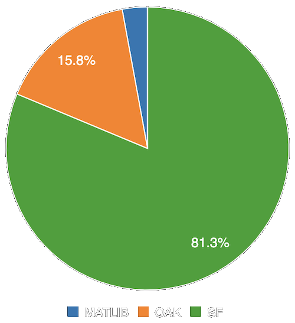

"Search engine" links to any given table: https://schema.koha-community.org/23_05/tables/%s.html
Experimental Queries
Peek at what's in a particular table:
SELECT * FROM deletedbiblio
Enumerate the values in a field:
SELECT DISTINCT itype FROM items ORDER BY itype
SELECT DISTINCT itype, COUNT(*) FROM items
GROUP BY itype ORDER BY itype
deleted* tables
Deleted biblios (and their metadata), items, and borrowers (patrons) are not removed from the database permanently but transferred to a new table with a "deleted" prefix.
Similarly, past issues (checkouts) and holds (reserves) are moved to tables prefixed with "old".
Many reports, to be accurate, must factor in these "deleted" or "old" tables.
Use a UNION in a subquery
All biblios:
SELECT * FROM (
SELECT * FROM biblio
UNION
SELECT * FROM deletedbiblio) b
ORDER BY b.biblionumber
Annotate combined tables
Combined items table has a "status" column.
SELECT i.status, i.itemnumber, i.itype FROM
(SELECT "live" as status, i.* FROM items i
UNION
SELECT "deleted" as status, di.* FROM deleteditems di) i
status
itemnumber
itype
live
1
BOOK
deleted
2
BOOK
Annual Bibs Added Example
SELECT YEAR(datecreated) as Year, COUNT(*) as "Records Added"
FROM (
SELECT biblionumber, datecreated FROM biblio
UNION
SELECT biblionumber, datecreated FROM deletedbiblio
) b
WHERE YEAR(datecreated) BETWEEN 2016 AND YEAR(CURDATE())
GROUP BY YEAR(datecreated)
statistics versus issues table
Rather than combine issues & oldissues for circulation figures, use statistics.
The issues tables have no item information & JOINing them to the items tables does not account for changes in item type or location since the checkout occurred.
Checkouts by Branch
SQL by Nicole C. Engard, ByWater Solutions
SELECT branch,
MONTH(datetime) AS month,
YEAR(datetime) AS year,
COUNT(datetime) AS checkouts
FROM statistics
WHERE type LIKE 'issue'
GROUP BY branch, year, month
ORDER BY year, month, branch
Translate Authorized Value Codes
Fields that use an authorized value as a controlled vocabularly store the Authorized Value code and not it's human readable label, but we can connect to the authorised_values table.
notforloan Example
SELECT i.notforloan as "NFL Code", av.lib as "Label",
COUNT(*) as "Items"
FROM items i
JOIN authorised_values av ON i.notforloan = av.authorised_value
AND av.category = "NOT_LOAN"
GROUP BY i.notforloan
NFL Code
Label
Items
-3
Repair
10
-2
In Processing
5
0
Available
65,735
Public JSON Data
Make a report's data easily accessible to external programs by setting it to "Public" and copying its JSON URL. The URLs look like:
Note: public means public! Don't include confidential information.
Example: add MARC Field to OPAC
Report with runtime parameter:
JavaScript in OPACUserJS:
Reports Keep Getting Better!
ID columns connect to bulk operations
"Update and run" button
Autocompletion
Graphs

#reports channel in BWS-Partners Slack
For instance, Koha reports won't allow the words UPDATE, DELETE, DROP, INSERT, SHOW, or CREATEanywhere, even in comments or strings. But folks suggested handy tricks like:
SELECT * FROM biblio
WHERE title LIKE CONCAT('%Rocky Horror Picture Sh','ow%')